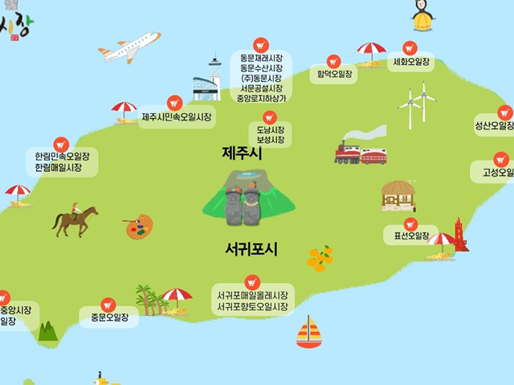
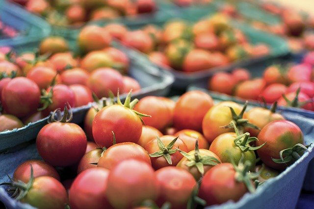
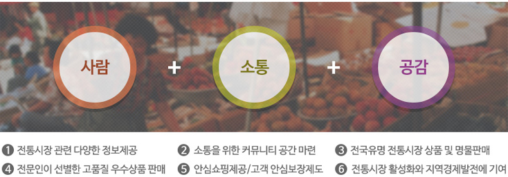

공익을 위한 신념으로
30년을 이어온 약속
농어촌 지역경제 활성화를 위해 시작된 산지직송 서비스,
우체국쇼핑은 우정사업본부가 운영하는
공공 온라인 쇼핑몰입니다.
1986년 농수산물 수입개방(우루과이라운드)으로 인해
우리 농어민은 판로 개척이 어려워졌고,
이때부터 우체국쇼핑은 전국 우체국 네트워크를 통해
소상공인, 생산자와 소비자를 직접 연결하여
안심 먹거리를 제공하고 있습니다.


경상남도 대표 농수산물 쇼핑몰.
산지직송 농수산물,
안전한 먹거리 지역 특산물.
상남도에서 지원하는 농수산물쇼핑몰, 농산물, 수산물, 가공식품 등 판매
전국 전통시장에 관한 다양한 컨텐츠를 함께 공유할 수 있는 공간인 동시에
온누리 전자상품권으로 쇼핑까지 가능한 온라인 전통시장 전문포털 서비스입니다.
